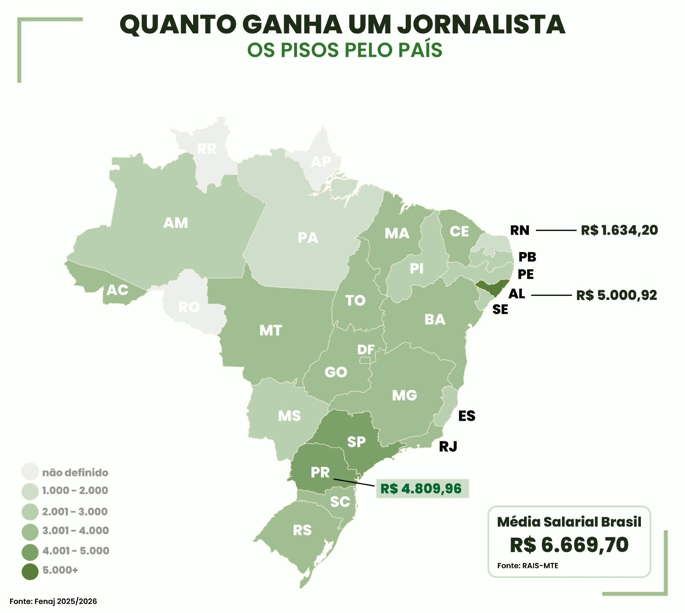

“A imprensa de uma forma geral, a imprensa hegemônica, ela não costuma trazer a pauta dos trabalhadores, ouvir os trabalhadores, ouvir os sindicatos.”Elza Caldeira, jornalista do Portal Verdade e apresentadora do Programa Aroeira
Foi para ocupar esse espaço que os sindicatos de Londrina passaram a produzir a própria comunicação: o jornalismo sindical, feito pelas entidades para falar com a categoria e com a classe trabalhadora.
Essa comunicação se sustenta hoje num cenário de sindicatos fragilizados, de direitos em disputa e de um mercado que paga cada vez menos aos próprios jornalistas. Para entender como se chegou até aqui, é preciso voltar no tempo.
Um sindicato nascido sob o Estado
A estrutura sindical do país nasceu sob forte presença do Estado. O governo de Getúlio Vargas criou a Lei da Sindicalização, em 1931, e a CLT, em 1943, que passaram a regular a organização dos sindicatos. O financiamento vinha, em grande parte, da contribuição sindical obrigatória, prevista na própria CLT.
- 1931Lei da Sindicalização, criada no governo de Getúlio Vargas.
- 1943A CLT passa a regular a organização dos sindicatos e prevê a contribuição sindical obrigatória.
- 1983Criação da CUT, depois das greves do ABC paulista do fim dos anos 1970.
- 1988A Constituição acaba com o controle do Estado sobre a criação das entidades, mas mantém a unicidade sindical.
A partir do fim dos anos 1970, as greves do ABC paulista e a criação da CUT, em 1983, deram ao movimento um perfil mais combativo e mais independente do governo.
A Constituição de 1988 acabou com o controle do Estado sobre a criação das entidades, mas manteve a unicidade sindical, regra que permite um único sindicato por categoria em cada base territorial. Estudos sobre o período apontam que 1988 e 1989 concentraram o maior número de criações de sindicatos.
Negociar, mobilizar, pressionar
O Sindijor Norte PR, o Sindicato dos Jornalistas Profissionais do Norte do Paraná, representa a categoria na região de Londrina. Uma de suas tarefas é negociar com as empresas a convenção coletiva de trabalho (CCT), documento que fixa o piso salarial, o reajuste e outras condições. As convenções de outras regiões mostram esse formato, como a CCT dos jornalistas de São Paulo, que traz o salário normativo em cláusula própria.
A atuação sindical também passa por assembleias, mobilizações e pela pressão política. A FENAJ, a Federação Nacional dos Jornalistas, chegou a levar dirigentes de sindicatos de todas as regiões a Brasília para conversar com líderes partidários sobre a PEC 206/2012, que trata do diploma de jornalismo.
“A principal coisa que acontece quando você trabalha em qualquer atividade é você ter compromisso de classe, compromisso social. E isso o sindicato dá.”José Maschio, o Ganchão, dirigente e secretário-geral do Sindijor Norte PR
Quando um sindicato entra em ação?
Negociações sobre salário, benefícios e condições de trabalho.
Mobilização e direitos
Salário mínimo, limitação da carga horária e o exemplo dos bancários. Reportagem de Julia Trajano, UEL.
VT: Jornalismo Sindical
Mais sindicatos, menos força
Há dez anos, em 2016, o Cadastro Nacional de Entidades Sindicais (CNES), do Ministério do Trabalho, registrava 16.811 entidades sindicais, entre sindicatos, federações e confederações de trabalhadores e de patrões, segundo o Ipea. Desse total, 16.200 eram sindicatos. Só os de trabalhadores somavam cerca de 11,1 mil em novembro de 2016, de acordo com levantamento publicado pelo Brasil de Fato. Em janeiro de 2023, o Dieese contava 18.698 entidades com registro ativo, 13.026 delas representando trabalhadores.
O número cresce porque a regra da unicidade, criada para evitar a fragmentação, acaba por estimulá-la, segundo o Dieese. Mais entidades, porém, não significam mais força.
A reforma trabalhista de 2017 tornou facultativa a contribuição sindical, que antes era obrigatória. Para o Dieese, a mudança asfixiou financeiramente sindicatos e, sobretudo, federações, confederações e centrais. A filiação também caiu: segundo o IBGE, o país perdeu cerca de 3 milhões de sindicalizados depois da reforma, chegando a 10,5 milhões em 2019, enquanto o número de pessoas ocupadas crescia. A taxa de sindicalização passou de 11,0%, em 2019, para 9,2%, em 2022, segundo dados reunidos pelo Dieese. No mesmo período, o emprego com carteira assinada recuou de 35,1 milhões, em 2016, para 32,9 milhões, em 2021, de acordo com o IBGE.
O Coletivo dos Sindicatos
Em Londrina, o efeito aparece no dia a dia do Coletivo dos Sindicatos. Elza Caldeira é assessora de comunicação da entidade há cerca de dez anos. Hoje o coletivo tem 18 sindicatos, mas já teve mais de 30 quando ela assumiu. Ela atribui a queda ao governo anterior, que, segundo ela, tentou dizimar os sindicatos, e conta que hoje 13 contribuem mensalmente.
Maschio critica quem pede que a entidade não cobre a taxa assistencial e depois reclama quando o resultado não vem como esperado. Para ele, participar do sindicato é assumir um compromisso.
Sindicatos do Coletivo de Londrina, segundo Elza Caldeira.
O mundo do trabalho também pesa sobre o movimento. A jornalista Franciele Rodrigues, socióloga, repórter e editora do Portal Verdade, cita o desmantelamento de direitos e novas modalidades, como o trabalho por aplicativo, o trabalho por hora e os contratos intermitentes, que dificultam a representação sindical.
A comunicação dos trabalhadores
O jornalismo sindical é a comunicação que essas entidades fazem com os trabalhadores. Um exemplo em Londrina é o Programa Aroeira, que vai ao ar aos sábados, a partir das 12h, na Rádio UEL FM (107,9), com cerca de uma hora de duração. Ele trata do cotidiano das lutas sindicais e nasceu no Coletivo dos Sindicatos de Londrina, do qual fazem parte entidades como o Assuel Sindicato e o Sindiprol/Aduel.
Elza conta que o Aroeira surgiu durante os protestos contra as reformas da Previdência e trabalhista. Os sindicatos de Londrina já estavam unidos nos atos convocados pelas centrais sindicais e decidiram criar um canal de comunicação. O grupo gravou um piloto, a rádio o levou ao conselho editorial e o programa foi aprovado. Foi em julho de 2018 que o Aroeira entrou no ar, e segue na Rádio UEL até hoje.
Segundo Elza, a notícia costuma chegar pronta, ouvindo os patrões e sem mostrar com clareza a perda de direitos. O Aroeira, afirma, também incentiva os trabalhadores a lutarem pelos direitos e a se filiarem a um sindicato, porque, nas palavras dela, “juntos somos mais fortes”.
Os sindicatos pertencem a centrais diferentes, e há pautas distintas entre servidores públicos e trabalhadores da iniciativa privada, então ela atua como mediadora. Para Elza, o coletivo “tem sido modelo pro Brasil, principalmente por causa da valorização da comunicação”, e mantém dois canais próprios: o Portal Verdade e o Aroeira.
No impresso e no digital
Armando Tim trabalha há 39 anos como assessor de imprensa no Sindicato dos Bancários, onde cuida da parte impressa e da digital. Segundo ele, o papel do jornalista no sindicato é “coordenar e produzir os materiais jornalísticos para informar a categoria, a população, às vezes, e a classe trabalhadora”.
Na prática, ele é responsável pelo jornal quinzenal Vida Bancária, que chama de “cartão postal” da entidade, e pela atualização do site. O trabalho atende quatro sindicatos de bancários da região, entre eles os de Londrina e de Apucarana, e mistura conteúdo local com matérias de fora. Ele também diz que a comunicação sindical dialoga com a CUT, que reúne trabalhadores de várias categorias do país, e com pautas gerais, como as reformas trabalhista e da previdência.
Para ele, a comunicação sindical não é amadora: “Aqui é a profissionalização da comunicação, não é uma coisa amadora.” E reforça o compromisso com a informação: “Tudo que a gente informa aqui é o que está acontecendo de fato.”
Nadando contra a corrente
Franciele, que também atua na produção do programa Aroeira, vê o jornalismo sindical como comunicação contra-hegemônica. Segundo ela, mesmo diante das mídias tradicionais, como TV e rádio, ele já está “nadando contra a corrente”. Em Londrina, diz, os meios de comunicação estão muito concentrados, o que reduz a visibilidade dessas pautas.
As redes sociais têm um lado positivo: funcionam como “um trampolim” para os conteúdos e permitem furar as bolhas dos sindicatos, com leitores que chegam ao portal por reposts no Instagram e pelo Facebook. O problema é que muita gente lê só a chamada no Instagram, o que, segundo ela, pode levar a uma visão deturpada do conteúdo.
Uma das principais funções do jornalismo é o interesse público, “que a pessoa possa se orientar a partir daquela informação”.Franciele Rodrigues, Portal Verdade
Greve e um mercado que mudou
Maschio passou 22 dias em greve contra a Folha de Londrina. “Eu sabia no primeiro dia que estava demitido, porque eu era um dos líderes da greve”, conta. Para ele, a luta tem custo: “Você tem os prejuízos, mas não pode abrir mão do que tem de interesse.”
Depois, trabalhou na Folha de S.Paulo de 1987 a 2010, segundo conta, e diz ter vivido “o último bom tempo do jornalismo”.
Hoje, o cenário é outro. “Em termos de salarinho, acabou esse boom. Só que, por outro lado, vocês têm uma ampla, imensa gama de oportunidades, redes sociais, blog”, afirma Maschio. Para ele, “cabe a vocês descobrirem esse mercado que está aí para conquistar”.
Os pisos pelo país
A remuneração é um dos pontos mais sensíveis da categoria. Em 2026, a negociação do piso salarial dos jornalistas do Paraná levou 155 dias entre as entidades patronais (SERT-PR e Sindejor-PR) e os sindicatos SindijorPR e Sindijor Norte PR, segundo a Prensa Mercosur. O Dieese calculou que o piso precisaria chegar a R$ 5.290,87 para repor as perdas acumuladas.
O piso do Paraná, medido
Piso é o mínimo fixado em convenção. Média é a remuneração média dos jornalistas com carteira assinada. Os dois números medem coisas diferentes.
Os pisos variam conforme o estado, a jornada, o tipo de veículo e o porte do município. O piso é diferente da média. Neste ano, a remuneração média dos jornalistas com carteira assinada foi de R$ 6.669,70, segundo um estudo do Dieese para a FENAJ divulgado pela CUT, a partir da RAIS.
Toque ou clique direto em um estado do mapa, ou escolha pela lista ou por uma faixa, para ver o valor.

Abrir o infográfico original no Drive
Fonte: Fenaj 2025/2026. Média salarial: RAIS-MTE. Valores exatos só aparecem onde o infográfico os traz; nos demais estados, o mapa informa apenas a faixa.
Da exigência de 1969 à PEC 206/2012
A exigência do diploma para exercer a profissão está em vigor desde 1969. Por enquanto, vale a decisão de 2009: o diploma não é exigido, e a PEC 206/2012 aguarda votação no Plenário da Câmara, segundo a Rádio Senado. A possível revisão no STF ainda depende de um novo julgamento.
- 1969Entra em vigor a exigência do diploma para exercer a profissão.
- 2009Vale a decisão de 2009: o diploma não é exigido.
- 2012A PEC 206/2012 aguarda votação no Plenário da Câmara.
- Ago 2026Possível revisão no STF, que ainda depende de um novo julgamento.
É nesse intervalo que o sindicato aparece como espaço de defesa da profissão, tanto na negociação do piso e das condições de trabalho quanto na disputa sobre quem pode exercer o jornalismo.
Formação é valorização
Para a FENAJ, a defesa do diploma é a defesa da formação, da valorização profissional e do jornalismo de que a sociedade precisa, conforme a mobilização nacional da entidade. A federação também sustenta que a exigência permitiu o crescimento e o aperfeiçoamento dos cursos de graduação e de especialização, o que fortaleceu o mercado de trabalho.
Para Maschio, a universidade existe para formar pessoas cientes da função social do jornalismo, e a ética é central. “O jornalismo pode matar por falta de ética ou por falta de exercício profissional. Pode causar dramas”, afirma. Segundo ele, essa noção precisa vir “desde o primeiro ano de faculdade”.
Armando Tim também liga a qualidade da informação à formação. “O jornalismo é uma coisa que tem que lidar com informação, é muito sério, tem que ser um profissional, um jornalista formado, um jornalista com experiência principalmente”, afirma.
Liberdade de expressão
A decisão de 2009 partiu da ideia de que o jornalismo está diretamente ligado à liberdade de expressão. A ANJ, associação que reúne os maiores jornais do país, defendia à época que o diploma funciona como barreira à liberdade de expressão. Em agosto de 2026, a entidade questionou a oportunidade de retomar a discussão justamente em meio às investigações envolvendo fontes, de acordo com o Correio da Manhã. Dino, por sua vez, vê no avanço das redes sociais um motivo para reabrir o debate.
Quem atua na profissão hoje
Pesquisa Perfil do Jornalista Brasileiro, UFSC, edição 2021, com 6.650 respostas válidas.
O relatório não permite concluir se o fim da exigência mudou o perfil de quem entra na profissão. A sindicalização entre os jornalistas era baixa: em 2012, 25% eram filiados a um sindicato, dado que o mesmo relatório usa como comparação.
Sobre a confusão entre jornalistas, influenciadores e blogueiros, Maschio se diz otimista: “Vai chegar uma hora em que a própria sociedade fala, não, queremos informação correta.”
O que dizem as pessoas
Entrevistas de rua com estudantes e passantes sobre o diploma e a informação que chega até eles.
Antes de ouvir, pense: você sabe dizer se uma notícia foi feita por um jornalista formado? Depois, teste o que você entendeu no quiz abaixo.
Ir para o quizO que você acha sobre a obrigatoriedade do diploma de jornalismo no Brasil?
A exigência deixou de valer em 17 de junho de 2009, após decisão do STF que a considerou inconstitucional.
Quiz do diploma
Cinco perguntas sobre a formação em Jornalismo, o diploma e o papel do sindicato.